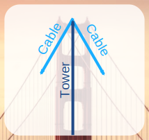
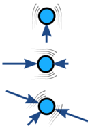
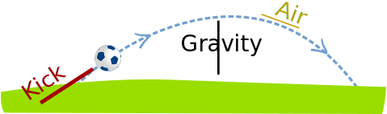
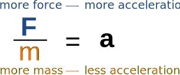

Force
Force is push or pull.
Unbalanced forces make an object accelerate
Balanced
Forces on an object are usually balanced: forces in one direction are equal to forces in the opposite direction:

Examples of
Balanced Forces
No acceleration.
Example: The forces are in balance at the top of this bridge tower.
The cables pull downwards equally to the left and right, and that is balanced by the tower's upwards push. (Does the tower push? Yes! Imagine you stand there instead of the tower.)
We can model the forces like this:

By putting them head-to-tail we see they close back on themselves, meaning the net effect is zero:
The forces are in balance.
Unbalanced
But when forces are unbalanced the object accelerates.

Examples of Unbalanced Forces.
There is acceleration.

Kicking a ball is an unbalanced force that makes it accelerate very quickly.
Once it loses contact with your foot that force (and its acceleration) stops.
The ball would continue to travel in a straight line at a fixed velocity, except that other forces act on the ball:
- Gravity is now an unbalanced force that makes the ball accelerate downwards.
- Air resistance is also an unbalanced force which gradually reduces the velocity of the ball.

Acceleration: an increase or decrease in velocity
A decrease in velocity can also be called deceleration.
Force and Acceleration are linked.
The more force, the more acceleration.
But objects with more mass are harder to accelerate
The more mass, the less acceleration.
Imagine trying to kick a stone ball:
The famous formula is:
F = ma
"Newton's Second Law of Motion"
(F is force, m is mass and a is acceleration)
Dividing both sides by m makes it clearer:

The idea that mass resists acceleration is called inertia.
Inertia means the object wants to continue to do what it does.
If it is at rest (in relation to us), it continues to be at rest. If it is moving East at 20 m/s, it continues moving East at 20 m/s. etc.
This oil tanker has a large inertia. It is:
- hard to speed up
- hard to slow down when it is moving (can take many kilometers to stop)
- hard to change direction
It seems that mass doesn't like being pushed around!
Newtons
In honor of Sir Isaac Newton the unit of force is the Newton (abbreviation is N).
A Newton is the force it takes to make 1 kg change its velocity by 1 m/s every second.
The two lots of "/s" (per second) become "/s2" (per second squared), so:
1 Newton is 1 kg m/s2 (kilogram meter per second squared)
Example: A 2000kg car goes from 0 to 15 m/s in 5 seconds. What is the force?
The acceleration is 15 m/s over 5 seconds, or 15 m/s 5 s = 3 m/s s = 3 m/s2
Now let's calculate the force:
The force is 6 kN (6 kiloNewtons).
Forces are Interactions

In the words of Sir Isaac Newton (his Third Law of Motion):
"To every action there is always opposed an equal reaction"
Today we say "Every action has an equal and opposite reaction"
He also gave this example:
"If you press a stone with your finger, the finger is also pressed by the stone."
Vector
Force has magnitude and direction. So it is a vector:

Acceleration also has magnitude and direction. So it too is a vector.
Calculations
Read the page devoted to Force Calculations
Relative
Note: when we say something is "at rest" or "moving at 4 m/s" we forget to say "in relation to me" or "in relation to the ground", etc.

Think about this: are you really standing still? You are on planet Earth which is spinning at 40,075 km per day (about 1675 km/h or 465 m/s), and moving around the Sun at about 100,000 km/h, which is itself moving through the Galaxy.
It is all relative!
Summary
- Force is a push or pull
- Forces on an object can be balanced or unbalanced
- Unbalanced forces make an object accelerate
- More force, more acceleration
- More mass, less acceleration (inertia)
- "To every action there is always opposed an equal reaction"
Newton's Three Laws
Back in 1687 Newton wrote three laws about motion, which basically are:
- First Law: Inertia (force is needed to change an object's velocity)
- Second Law: F = ma
- Third Law: Every action has an equal and opposite reaction